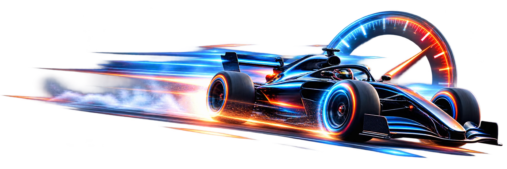

Ogcode is not Claude Code.
Every coding agent re-sends your whole conversation, every turn. Ogcode recalls instead — for about a third of the bill.
curl -fsSL https://ogcode.xyz/install.sh | sh
or brew tap prasenjeet-symon/tap && brew install ogcode All releases ↗
Your model. Your keys. Or none at all.
Why it costs less
The longer you work, the more you save.
Fewer tokens
Every turn sends only what matters — not the whole conversation again.
No context clock
Long sessions stop being a countdown to amnesia.
It still remembers
What you decided in March is still right there in September.
Measured on real sessions · see the numbers →
Context engineering, at its peak.
Everything Ogcode has ever learned about your repo sits on a live map. Ask a question, and only the pieces that answer this question get gathered and sent — every query carries its own context.
assembled for this query: 5 squares lit · 2 files · 1 decision — not the whole history
Accuracy never seen before.
When the context is clean, the answer usually is. With less noise to fight through, the model stops guessing at things it was never shown — and the first attempt is usually the review-ready one.
- Less noise, more signal — the model sees only what matters
- Fewer reverts, fewer rewrites — diffs you can actually read
- Nothing merges without a human yes
Powered by OGmap.
Ogcode indexes your codebase and keeps track of which file contains what — every module, every route, every helper. So when the agent needs something, it knows exactly which file to open — no blind searching, no guessing.
- Indexed once at open, kept fresh as the code changes
- The agent asks in plain words, OGmap points to the file
- Instant retrieval instead of one
lsat a time
No more blind file reads.
Opening a file doesn't mean swallowing it whole. Every declaration is mapped to its lines, so the agent reads the exact range the task needs — a function, a struct, a test — and leaves the other four hundred lines alone.
Unprecedented speed, never seen before.
Answers land while the question is still on your screen. Ogcode reads only the lines a task needs, so turns finish in seconds — not minutes — and stay that fast on a ten-year-old monorepo.

Nothing goes unreviewed.
Other agents commit in the dark — one silent git commit and the work is gone into history. Ogcode works in the open: every change waits in your working tree as a real git diff, and nothing is written down until you say so.
- Every change lands as a working-tree diff — inspect, stage, unstage, or reject
- Review hunk by hunk, file by file, before anything touches history
Every page, figure and table — indexed.
Headings and quotes — parsed, not dumped.
Sheets and cell ranges — queried like data.
Your project is more than code.
Specs, proposals and spreadsheets sit right beside the source. Ogcode reads PDF, DOCX and Excel natively — so the agent opens them like files it wrote itself. No exports, no copy-paste.
Fair questions.
Does my source code leave my machine?
Can I really run it fully offline?
ollama on macOS and Linux. Offline you lose the web search tool and hosted models — everything else works.Is the 70% number real, or marketing?
If it doesn't re-read everything, does it forget things?
Does it work on Windows?
irm https://ogcode.xyz/install.ps1 | iex in PowerShell, or run the Docker image. Opening PRs automatically needs the GitHub CLI authenticated.